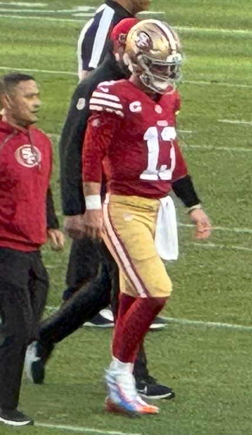

49ers 5 and 0 Through All the Injuries: Shanahan's Best Job Yet
Three wins over 12 win teams. Half the roster in the training room. A head coach who spent July recovering from a car wreck. And nobody's beaten us yet.

I was sitting in the car in the parking lot at work this morning, engine off, coffee going cold, reading the injury report on my phone for the third time. Not the score. The injury report. That's what being a 49ers fan has done to me. We're 5 and 0, we just beat the world champions in their own building, and the first thing I did Monday was check who's hurt.
Then I saw the number that made me put the phone down.
The 49ers are only the second team in NFL history to start 5 and 0 with three of those wins coming against teams that won 12 or more games the year before. The Rams won 12 last year. The Broncos won 14. The Seahawks won 14 and the Super Bowl. We beat all three. The only other team that ever pulled that off was the 1999 St. Louis Rams, and they finished the year holding the trophy.
I'm not saying that's us. I'm absolutely thinking it, though.
Look at who we beat, and look at who wasn't there
Rams, 27 to 7, in Melbourne, on the other side of the planet, with a goal line stand that set the tone for this whole thing. Miami, 35 to 13, at Levi's on a short week after flying home from Australia. Arizona, 36 to 30, with Kittle catching the go ahead touchdown in the fourth quarter. Denver, 24 to 14, against the team that was the top seed in the AFC last year. And then Seattle, 32 to 29, at Lumen Field, in the building where they beat us 41 to 6 in January.
We're scoring 30.8 points a game, third in the league. We're giving up 18.6, also third. That's not a team sneaking by on close calls and lucky bounces. That's a team that's good on both sides of the ball.
And they did all of it with a roster that looks like the waiting room at an urgent care.

The injury list is longer than some depth charts
I tried to write it all down on a napkin at lunch and ran out of napkin.
Nick Bosa, our best player on defense, has missed the last three games with a calf injury. Alfred Collins tore his patellar tendon at practice in Melbourne two days before the opener, and he's done for the year. Ricky Pearsall needed season ending surgery on his PCL before a single real snap. De'Zhaun Stribling, our top pick, had ankle surgery and is out somewhere around ten weeks. Jake Tonges hurt his MCL in Australia. Demarcus Robinson has been out. James Thompson Jr. is out with an ankle. Kyle Juszczyk hyperextended his knee against Denver. Marques Sigle has a high ankle sprain and he'll miss at least a month. Upton Stout sprained his shoulder. Deebo hurt his hamstring in Seattle and never came back. Mike Evans has been playing through busted ribs for two straight weeks.
At one point Shanahan lost six of the ten defensive linemen who made the team inside of two weeks. Six of ten. He called it "a little unusual." A little! I'd have called it a curse and gone home.
They were signing guys off the street and activating practice squad bodies just to have enough people to line up on the defensive front. Mykel Williams only just came back. Kittle's been fighting the flu on top of everything else. Every Wednesday I'd open the practice report and there'd be another name on it, and every Sunday they'd go out and win anyway.
And honestly? Every year I've been a fan of this team, a list like that has meant one thing. It's meant the season's over by Halloween and we're arguing about draft picks in November. Not this year. Not yet.
Kyle Shanahan was in a car wreck in July
People already forgot this and I don't know how.
July 14, Shanahan was in a car accident. A severe concussion. A broken nose. Three broken ribs. A broken hand. More than 40 stitches. He came into training camp limited, easing back into running his own practices, a guy who's supposed to be the sharpest offensive mind in the sport trying to coach through a concussion and a hand he couldn't use right.
Three months later he's 5 and 0 and he out coached Mike Macdonald in Seattle with a backup linebacker and a fullback on the shelf.
I've been hard on Kyle. Real hard. I've screamed about the run calls on third and long, the clock management, the Super Bowls. I'm still not over Atlanta and that was with a different team. I've said things about him in my group chat I wouldn't say to his face. So believe me when I say this, because it doesn't come easy.
This is the best coaching job Kyle Shanahan has ever done.
Why this beats 2019 and 2023
He's started 5 and 0 twice before. In 2019 and in 2023, and both of those teams went to the Super Bowl. So I know what you're going to say. Those were better teams. Maybe they were. That's sort of my point.
The 2019 team had a defensive line that was an absolute wrecking crew. The 2023 team had Deebo and Aiyuk and Kittle and McCaffrey all humming, the most stacked offense I've ever seen in a Niners uniform. Those 5 and 0 starts felt inevitable. You saw the roster in August and you knew.
This one didn't feel inevitable at all. Aiyuk's gone, his locker's literally gone. Pearsall's gone. Our top rookie receiver's in a walking boot. Bosa's in street clothes. The coach was in the hospital in July. We opened the year on a different continent. And Kyle took Mike Evans in his first year here, a Kittle coming off an Achilles, and a defense with a brand new coordinator in Raheem Morris, and he turned it into an unbeaten team.
That's coaching. Plugging guys in and having the scheme hold, adjusting week to week to whoever's actually standing, getting a 52 yard miss and three turnovers in Seattle and still having the team believe it's going to win. That's what good coaches do, and Kyle's done it every single week this year.
Raheem deserves a ton of this too, by the way. Five man fronts, guys nobody's heard of making plays, four takeaways against the champs. But Kyle hired him. Kyle hired all of them.

And Purdy keeps answering the bell
I'll say one more thing about the coaching, and it's really about the quarterback. Every single time this season Shanahan has needed a drive to win the game, Purdy has gone out and gotten it. Three second half touchdown drives against Denver. The 74 yard touchdown drive in Seattle that started at second and 21. The 43 yarder right after it to set up Pineiro.
That trust between those two is the whole engine right now. Kyle calls it, Brock makes it work even when the receiver he's supposed to throw to is in the training room. I used to wonder if Purdy was a product of the system. I don't wonder anymore. The system's held together with tape this year and he's still doing it.
Okay. Now don't blow it.
Because I'm a 49ers fan, I can't just enjoy this. I'm physically incapable.
Washington comes to Levi's on Monday night, October 19. The whole road ahead is on our 2026 schedule page. Bosa might be back for it, which would be like getting a first round pick in the middle of the season. Minnesota's coming too, also unbeaten, in Mexico City. Then the bye in Week 8, which honestly can't come soon enough for the guys in the training room. Get to the bye healthy, get Bosa and Juszczyk and Thompson back, get Deebo's hamstring right, and this roster in November is going to look scarier than anything we've seen in five weeks.
The 1999 Rams won the Super Bowl. Our last two 5 and 0 starts under Kyle ended in the Super Bowl too, and I don't have to tell you how those ended. I remember exactly where I was for both. I don't want to talk about it.
But this team is different. It's the one that's had every excuse to fold and keeps refusing. Kyle's built something this year that bends and doesn't break, and if he gets one more shot at that last game with this group, I think this is the one that finishes it.
I'll check the injury report again tomorrow morning. Of course I will.
More coverage: 49ers · 49ers 2026 schedule · 49ers injury report · 49ers depth chart · NFL